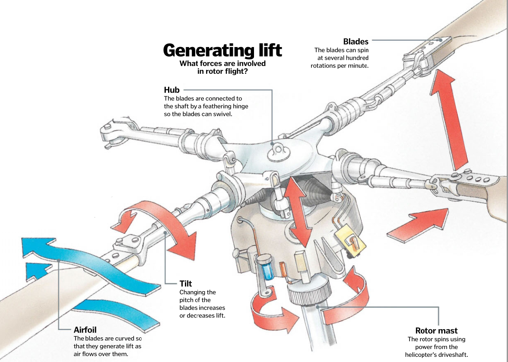

Helicopters follow the same basic aerodynamic principles as airplanes. Like plane wings, a helicopter’s blades are airfoils: curved on the top and flatter on the bottom. This shape generates lift by changing the pressure and direction of the air that flows over it. While planes use engines to drive forward and get air rushing over the wings, helicopters rapidly spin their motors. The pilot has command over this system using two control levers: one controls lift by tilting the blades and the other steers the helicopter by swivelling them. Helicopters also have a tail rotor that counteracts the thrust of the main rotor, preventing the fuselage from spinning, maintaining forward momentum and keeping the helicopter stable.
How a helicopter rotor works ?...
